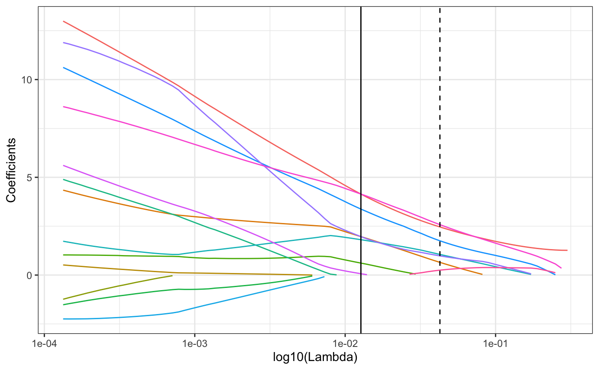
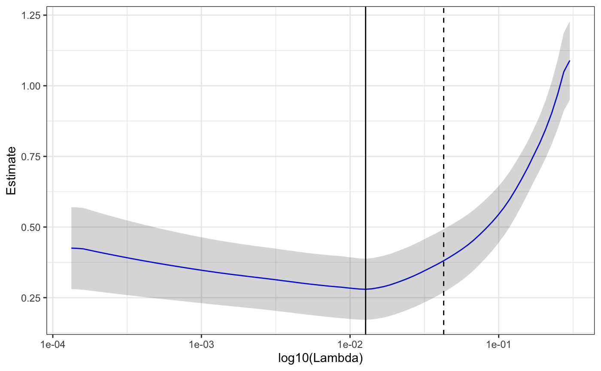
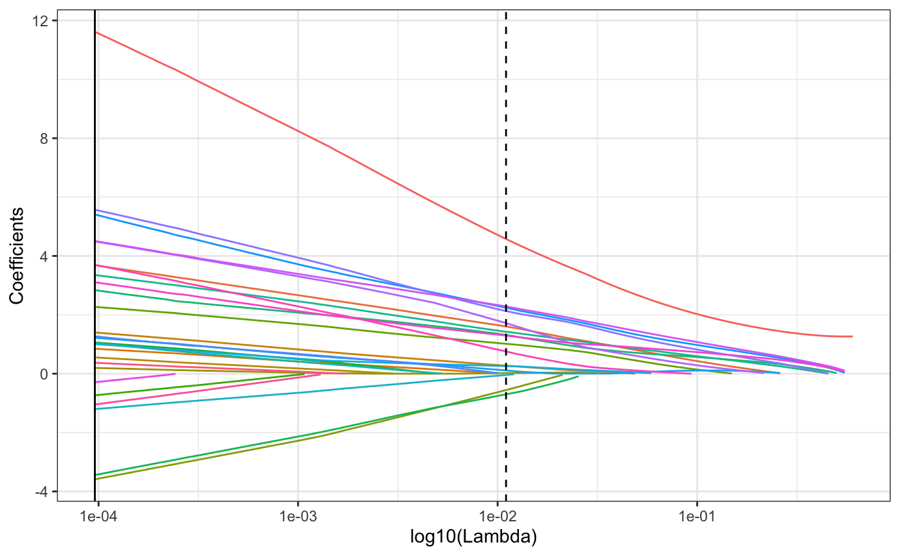
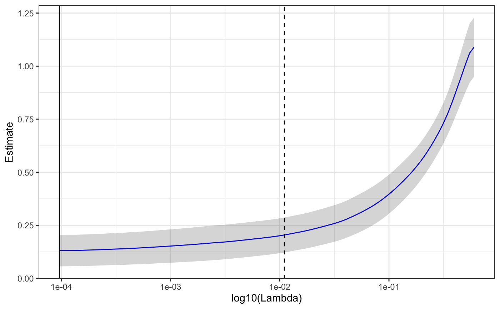
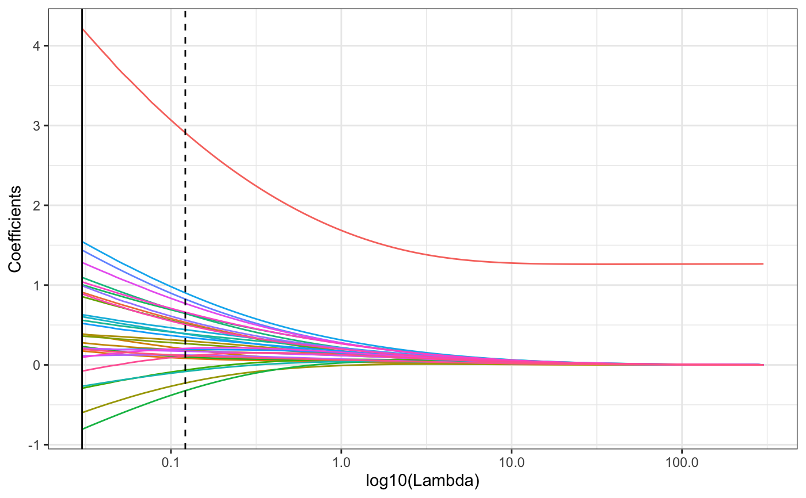
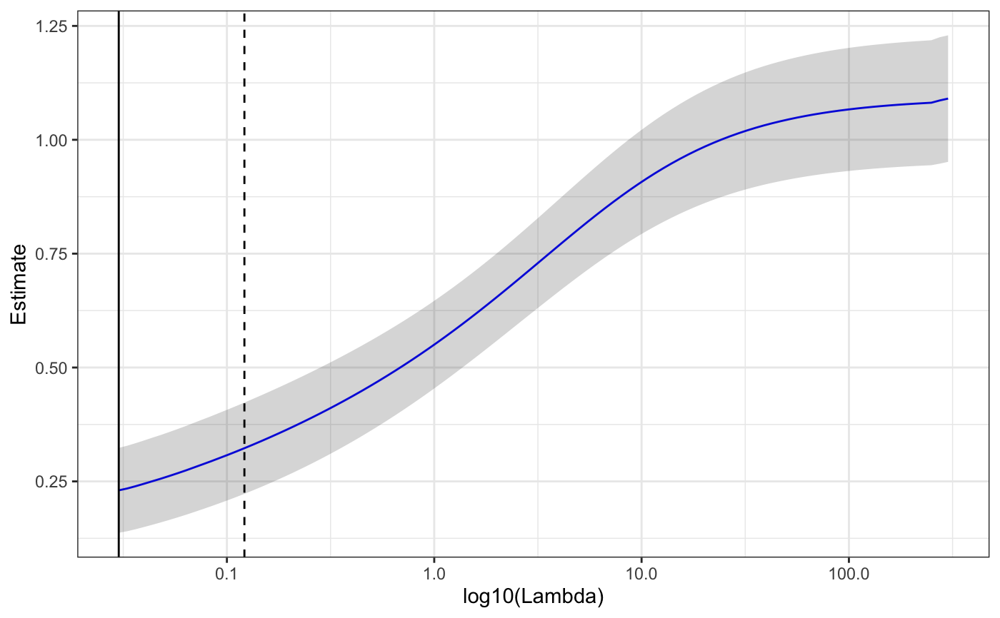
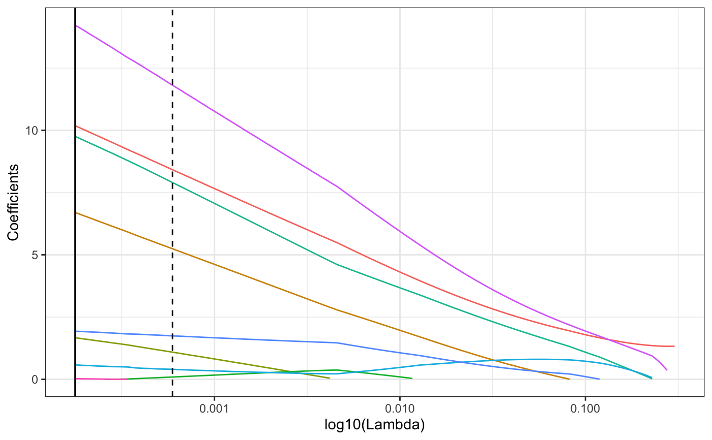
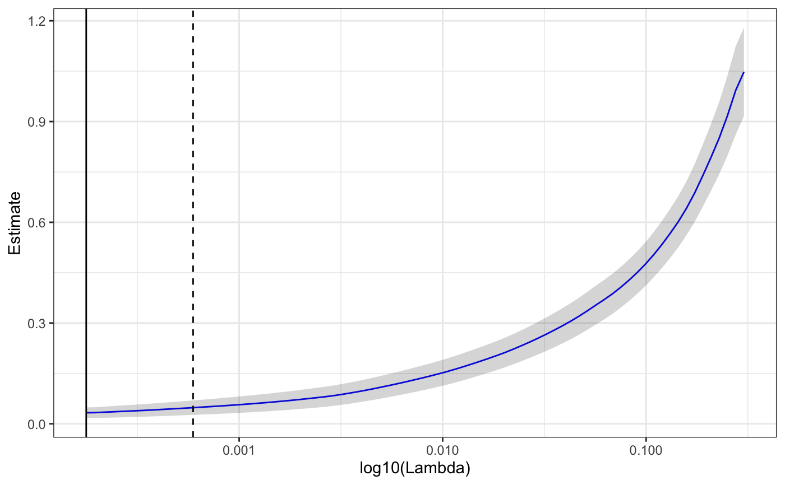

R/PomaLasso.R
PomaLasso.RdPomaLasso() is an implementation of the lasso, ridge and elasticnet regression from glmnet package for binary outcomes.
PomaLasso( data, alpha = 1, ntest = NULL, nfolds = 10, lambda = NULL, labels = FALSE )
| data | A MSnSet object. First |
|---|---|
| alpha | Elasticnet mixing parameter. alpha = 1 is the lasso penalty and alpha = 0 is the ridge penalty. This value must be between 0 and 1. |
| ntest | Numeric indicating the percentage of observations that will be used as test set. Default is NULL (no test set). |
| nfolds | Number of folds for CV (default is 10). Although nfolds can be as large as the sample size (leave-one-out CV), it is not recommended for large datasets. Smallest value allowable is nfolds = 3. |
| lambda | A user supplied lambda sequence. Typical usage is to have the program compute its own lambda sequence based on |
| labels | Logical indicating if feature names should be plotted in coefficient plot or not. Default is FALSE. |
A list with all results including plots, data frames and the resulting prediction model.
Jerome Friedman, Trevor Hastie, Robert Tibshirani (2010). Regularization Paths for Generalized Linear Models via Coordinate Descent. Journal of Statistical Software, 33(1), 1-22. URL http://www.jstatsoft.org/v33/i01/.
library(POMA) data("st000336") # lasso st000336 %>% PomaImpute() %>% PomaNorm() %>% PomaOutliers() %>% PomaLasso()#> Warning: method argument is empty! KNN will be used#> Warning: method argument is empty! log_pareto will be used#> $coefficients #> feature coefficient #> 1 (Intercept) 4.14314732 #> 2 glutamic_acid 0.61277598 #> 3 ornithine 3.37541723 #> 4 serine 0.06972777 #> 5 tryptophan 4.14355388 #> 6 a_kg 1.96644027 #> 7 lactate 1.80931447 #> 8 pyruvate 1.96683983 #> #> $coefficientPlot#> #> $cvLassoPlot#> #> $model #> #> Call: cv.glmnet(x = features, y = response, lambda = lambda, nfolds = nfolds, family = "binomial", alpha = alpha) #> #> Measure: Binomial Deviance #> #> Lambda Measure SE Nonzero #> min 0.01272 0.2797 0.1081 7 #> 1se 0.04265 0.3808 0.1115 6 #>#> Warning: method argument is empty! KNN will be used#> Warning: method argument is empty! log_pareto will be used#> $coefficients #> feature coefficient #> 1 (Intercept) 11.6161830 #> 2 x1_methylhistidine 3.6980407 #> 3 x3_methylhistidine 0.3724119 #> 4 alanine 0.8477445 #> 5 arginine 1.4004482 #> 6 asparagine 0.5538490 #> 7 aspartic_acid 0.1968801 #> 8 glutamic_acid 2.2706118 #> 9 glutamine -0.7334443 #> 10 glycine 1.0612063 #> 11 histidine -3.4420759 #> 12 isoleucine 2.8381721 #> 13 leucine 1.0355248 #> 14 lysine -1.2023114 #> 15 methionine 1.2198740 #> 16 ornithine 5.4094846 #> 17 phenylalanine 1.2689602 #> 18 serine 4.4945826 #> 19 tryptophan 4.5082917 #> 20 tyrosine -0.2905924 #> 21 valine 3.1066430 #> 22 x3_hba -1.0462712 #> 23 a_kg 3.6854168 #> 24 citrate -3.5875677 #> 25 lactate 3.3526632 #> 26 malate 1.0065610 #> 27 pyruvate 5.5705146 #> #> $coefficientPlot#> #> $cvLassoPlot#> #> $model #> #> Call: cv.glmnet(x = features, y = response, lambda = lambda, nfolds = nfolds, family = "binomial", alpha = alpha) #> #> Measure: Binomial Deviance #> #> Lambda Measure SE Nonzero #> min 0.000096 0.1308 0.07437 26 #> 1se 0.011016 0.2044 0.08210 17 #>#> Warning: method argument is empty! KNN will be used#> Warning: method argument is empty! log_pareto will be used#> $coefficients #> feature coefficient #> 1 (Intercept) 4.21592957 #> 2 x1_methylhistidine 0.89040946 #> 3 x3_methylhistidine 0.19560532 #> 4 alanine 0.17482232 #> 5 arginine 0.38876951 #> 6 asparagine 0.27711395 #> 7 aspartic_acid 0.38201761 #> 8 glutamic_acid 0.85543010 #> 9 glutamine -0.29284489 #> 10 glycine 0.23106874 #> 11 histidine -0.80718648 #> 12 isoleucine 1.00373105 #> 13 leucine 0.55911257 #> 14 lysine -0.26771988 #> 15 methionine 0.62877344 #> 16 ornithine 1.54452521 #> 17 phenylalanine 0.52044761 #> 18 proline 0.19682711 #> 19 serine 0.99179103 #> 20 threonine 0.20931512 #> 21 tryptophan 1.28354051 #> 22 tyrosine 0.09582537 #> 23 valine 1.04010909 #> 24 x3_hba -0.07790600 #> 25 a_kg 0.91014701 #> 26 citrate -0.59867822 #> 27 fumarate 0.36141836 #> 28 lactate 1.09650839 #> 29 malate 0.60431732 #> 30 pyruvate 1.43910224 #> 31 succinate 0.11316997 #> #> $coefficientPlot#> #> $cvLassoPlot#> #> $model #> #> Call: cv.glmnet(x = features, y = response, lambda = lambda, nfolds = nfolds, family = "binomial", alpha = alpha) #> #> Measure: Binomial Deviance #> #> Lambda Measure SE Nonzero #> min 0.03009 0.2304 0.09314 30 #> 1se 0.12146 0.3229 0.10018 30 #># prediction model using test set st000336 %>% PomaImpute() %>% PomaNorm() %>% PomaOutliers() %>% PomaLasso(ntest = 15)#> Warning: method argument is empty! KNN will be used#> Warning: method argument is empty! log_pareto will be used#> Warning: one multinomial or binomial class has fewer than 8 observations; dangerous ground#> Warning: one multinomial or binomial class has fewer than 8 observations; dangerous ground#> $coefficients #> feature coefficient #> 1 (Intercept) 10.18566113 #> 2 x3_methylhistidine 0.02683372 #> 3 aspartic_acid 1.67252848 #> 4 ornithine 0.58223605 #> 5 tryptophan 14.22407996 #> 6 a_kg 6.70371995 #> 7 lactate 9.75649704 #> 8 pyruvate 1.93112000 #> #> $coefficientPlot#> #> $cvLassoPlot#> #> $confusionMatrix #> Confusion Matrix and Statistics #> #> Reference #> Prediction 1 2 #> 1 2 1 #> 2 0 4 #> #> Accuracy : 0.8571 #> 95% CI : (0.4213, 0.9964) #> No Information Rate : 0.7143 #> P-Value [Acc > NIR] : 0.3605 #> #> Kappa : 0.6957 #> #> Mcnemar's Test P-Value : 1.0000 #> #> Sensitivity : 1.0000 #> Specificity : 0.8000 #> Pos Pred Value : 0.6667 #> Neg Pred Value : 1.0000 #> Prevalence : 0.2857 #> Detection Rate : 0.2857 #> Detection Prevalence : 0.4286 #> Balanced Accuracy : 0.9000 #> #> 'Positive' Class : 1 #> #> #> $model #> #> Call: cv.glmnet(x = data.matrix(train_x), y = as.matrix(train_y), lambda = lambda, nfolds = nfolds, family = "binomial", alpha = alpha) #> #> Measure: Binomial Deviance #> #> Lambda Measure SE Nonzero #> min 0.0001771 0.03286 0.01597 7 #> 1se 0.0005937 0.04796 0.02158 7 #>